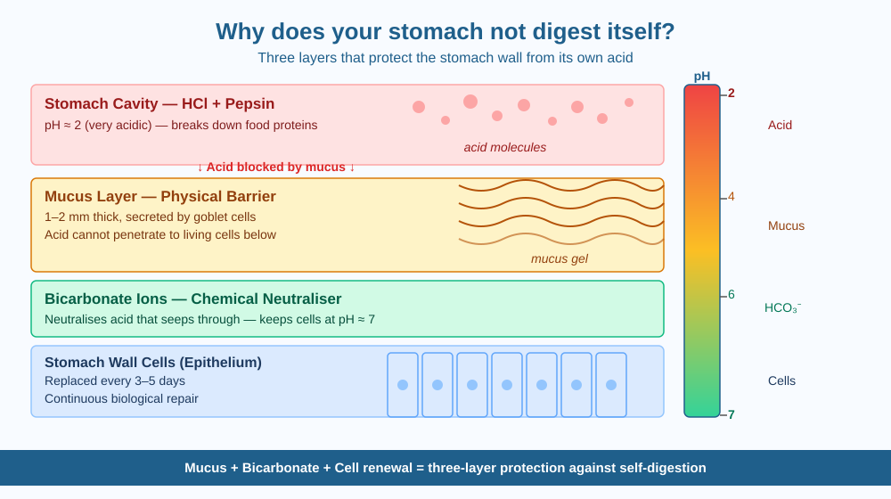

By the end of this lesson, you should be able to explain how the stomach protects itself from its own acid, name the three layers of that protection, and predict what happens when one layer is removed.
Every day, your stomach produces a powerful acid — the same kind used in laboratories — and an enzyme that dissolves protein. Your breakfast gets completely broken down by it. But here is the strange part: your stomach wall is also made of protein. Why doesn't it dissolve too?
Your stomach makes hydrochloric acid (HCl) — so corrosive it has a pH of about 1.5 to 2, nearly as acidic as the fluid inside a car battery. It also makes an enzyme called pepsin, which breaks apart proteins. Together, HCl and pepsin can digest most proteins you eat.
But the stomach protects itself with not one but three layers of defence working simultaneously.
Layer 1 — Mucus. The inner surface of the stomach is lined with millions of cells called goblet cells (or mucous cells). They continuously secrete a thick, slippery gel of mucus that coats the entire stomach wall, about 1–2 millimetres thick. This mucus acts as a physical barrier. The acid and pepsin sit in the hollow centre of the stomach — where the food is — but cannot easily penetrate through the mucus to reach the living cells beneath.
Layer 2 — Bicarbonate. The cells just underneath the mucus release bicarbonate ions — the same chemical found in baking soda. Bicarbonate is alkaline; it neutralises acid. So even if a small amount of HCl seeps through the mucus, the bicarbonate layer neutralises it before it reaches the living cells. The cells themselves are always surrounded by a near-neutral environment (pH around 7) even while the stomach centre is highly acidic.
Layer 3 — Constant cell renewal. Even with two layers of protection, a few surface cells get damaged each day. The stomach solves this by replacing its entire inner lining every three to five days. New cells push up continuously from deeper layers to replace damaged ones.
When all three layers work well, you never notice anything. When the system breaks down — for example, when aspirin thins the mucus, or a bacterium called Helicobacter pylori weakens it — the acid begins to attack the wall itself. The result is a painful open sore called a gastric ulcer.
Think of the stomach as a container where the centre is hostile (very acidic) but the walls are kept safe by three systems working together:
All three work simultaneously. Remove any one and the others cannot fully compensate. This is why stomach ulcers develop when even one layer is compromised — and why understanding the mechanism lets you predict exactly what goes wrong.
The included SVG shows a vertical cross-section through the stomach wall from the acidic cavity down to the living cells:

This mechanism explains several everyday experiences:
Helicobacter pylori is a bacterium that lives inside the stomach — one of the very few organisms that can survive in such a hostile environment. It does so partly by producing an enzyme called urease, which converts urea (a waste product) into ammonia. Ammonia is alkaline, so it neutralises the acid around the bacterium, creating a tiny safe zone.
H. pylori also produces a protein that weakens the mucus layer of the stomach wall nearby. Once the mucus thins, acid reaches the cells underneath and an ulcer begins to form.
Predict: If a doctor prescribed a medicine that fully restored mucus production, would that alone cure an H. pylori-caused ulcer? Give a reason based on the three-layer mechanism.
What is the main phenomenon studied when we ask why the stomach does not digest itself?
Why is understanding the cause-and-effect mechanism more useful than just memorising the answer?
If the mucus lining of the stomach were damaged, what would you predict would happen?
Explain today's concept to someone in Class 4 in 60 seconds without using the words "acid" or "enzyme." Then explain it again using the correct scientific vocabulary. Both explanations should describe all three protection layers. If both describe the same mechanism, you understand the concept rather than just the words.
Your stomach produces about 2 litres of gastric juice every single day, and the mucus lining resists it continuously. Most tiny erosions heal overnight — you never notice them. Your stomach is essentially performing a quiet, constant self-repair job every few days. This nonstop renewal is why the stomach doesn't age the same way bones or teeth do — it is almost always working with nearly fresh cells.
Your stomach doesn't digest itself because three layers work simultaneously — mucus (physical barrier), bicarbonate (chemical neutraliser), and cell renewal (biological repair). Understanding the mechanism predicts exactly what goes wrong in a gastric ulcer.